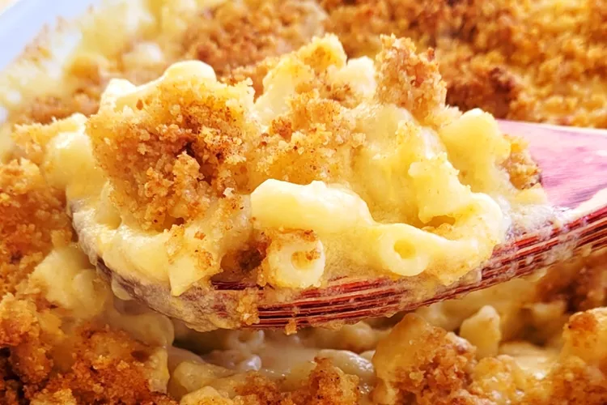

Homemade Mac and Cheese

Ingredients
- Macaroni
- Butter and flour
- Milk
- Cheese
- Seasonings: Salt and pepper for the sauce, paprika for topping
- Bread crumbs
-
Boil the noodles
Boil the macaroni in salted water until
the noodles are al dente. Drain and transfer to a prepared baking
dish.
-
Make the cheese sauce
Melt butter, then whisk in the
flour. Whisk in the milk, bring to a simmer, and stir in the cheeses.
Season with salt and pepper and continue simmering until the sauce is
thick. Pour the sauce over the noodles and stir
-
Make the topping
Melt two tablespoons of butter in a
skillet, add the bread crumbs, and toast until the crumbs are brown.
Spread the topping over the macaroni and cheese, then sprinkle with
paprika.
-
Bake the mac and cheese
Bake in the preheated oven until
the topping is golden brown.